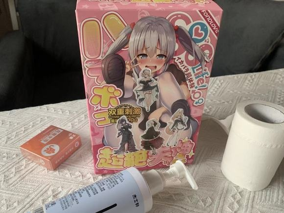

Hello
大家好！
好久不见！
我是大家最喜爱的新人指导者，
今天又给大家推荐我入门时期最喜爱的“玩具”了，
相信大家已经可以猜到是什么了吧。
没错就是：启蒙先辈
这款斐济杯的名字听起来就很有趣，不是吗？
一起来看看它到底有哪些亮点吧！
产品外观与设计
首先，
这款启蒙先辈斐济杯的设计风格十分吸引人，
采用了二次元动漫风格，完美抓住了新手们的心。
这种设计无疑为斐济杯增添了不少趣味性，
让物质感受与精神幻想合二为一，也让使用它的过程变得更加有趣。
手感与质感
当然我知道大部分人更关心它的手感与质感。
别急，听我慢慢到来。
启蒙先辈斐济杯的手感非常棒，
材质柔软又分量十足，拿在手里的感觉非常舒适。
这对于新手来说是非常友好的，可以让他们更容易地感知使用的过程。
适用人群与使用体验
对于喜欢慢玩的朋友来说，这款斐济杯是一个很不错的选择。
由于它偏软的特点，
使用起来更为舒适，适合那些喜欢慢慢享受的人。
不过，
如果你是喜欢强烈次激的高手，
可能会觉得它稍微有些不够次激。

12.00RMB
24.00RMB
主播特地申请了一批回馈给粉丝
如果能点开就是还有货哦
购买点击这里